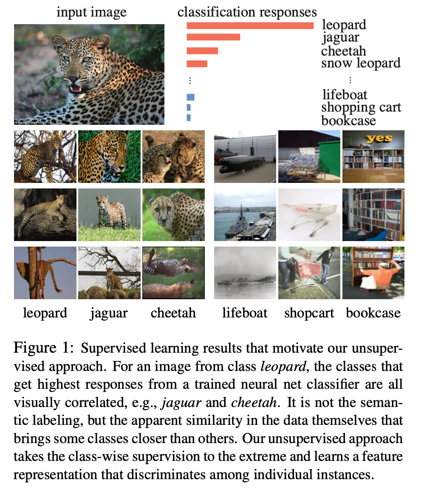
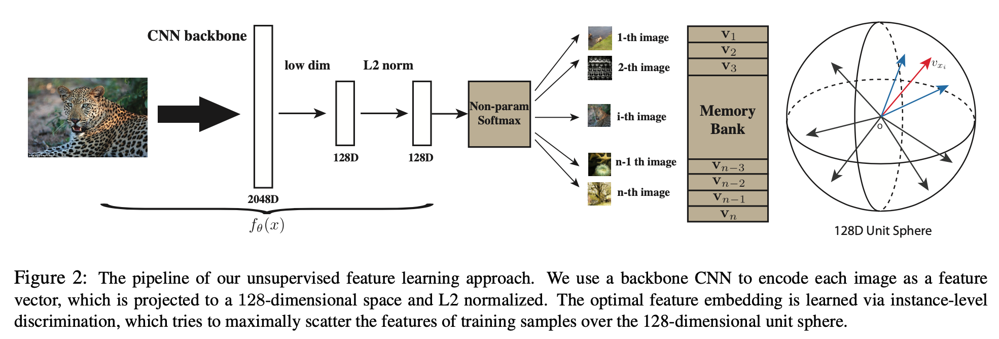
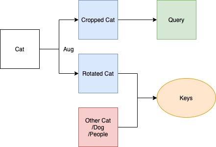

This article aims to introduce the pioneering work (InstDisc) that leads to contrastive learning.
Paper: Zhirong Wu, Yuanjun Xiong, Stella Yu, and Dahua Lin. Unsupervised feature learning via non-parametric instance discrimination. In CVPR, 2018. Updated version accessed at: https://arxiv.org/abs/1805.01978v1.
Why this paper?
Self-supervised models such as BERT/GPT have been used with great success in the NLP field. However, supervised learning still occupies most of the work in the CV field. Researchers hope to find a kind of pretext task in the image domain to complete self-supervised learning, just like MASK in the NLP domain. This paper creatively proposes a pretext task called instance discrimination which performs well and is still the most mainstream pretext task for contrastive learning so far.
Although techniques about the loss function, how negative samples are stored in this paper are obsolete, the pretext task and the framework in this paper has a milestone significance in the history of contrastive learning and has influenced most of the subsequent work.
Hence, I choose this paper as the first one in this series of the survey of contrastive learning.
Research Motivation

Paper’s Figure 1 is very clear to show the motivation. Authors find that:
For an image from class leopard, the classes that get highest responses from a trained neural net classifier are all visually correlated, e.g., jaguar and cheetah. It is not the semantic labeling, but the apparent similarity in the data themselves that brings some classes closer than others.
Hence, they want to:
Our unsupervised approach takes the class-wise supervision to the extreme and learns a feature representation that discriminates among individual instances.
In other words, contrastive learning is also called representation learning which aims to find an image vector(like word vector in NLP) which represents image semantic in a high dimension by unsupervised learning. And then, you can use these vector in your custom downstream tasks with a small annotated dataset.
Model Overview

Figure 2 shows a clear pipeline of the model inference. Now I will describe each part of them and try to make you understand easier.
Instance Discrimination
As figure 1 says, we want to get a vertor which similar images are close in a high dimension(128 in this paper) and not similar images are far way from each other without using annotated images. However, although InstDict model is called as a unsupervised model, they actually still uses label. The method they use is really tricky that they take every image as a class and the task is to distinguish every image instance. This task sounds useless, and yes they are. So this kind of task is named as pretext task, which the aim of them is just to let the model can be trained.

Above figure shows that a pipline of instance discrimination. An instance, in this example , is an image of a unqiue cat. it will be transferred by image augmentation into 2 images: cropped one and rotated one. These two represent the same cat and so the image vector of these 2 images should be similar in our model, and vertors of other images in red square should be quite different from these 2images. What you find? Yes, we get positive and negative sample by this kind of easy implementation. Usually, in contrastive learning, we call the “cropped cat” (one of the augmentation image) Query, and the combination of the other augmentation image and the rest images is called Keys. Hence, our aim is to find a key in keys which is most similar with the query.
To conclusion, instance discrimination is a tricky pretext task which make the images without labels can have similar label by using image augmentation.
Pros: easy to implementation, good explanation, proved to be useful
Cons: the negative samples may contain the positive sample(image another cat image is included but it will be treated as a negative sample in instance discrimination task)
Loss Function: NCE loss
\[Loss = -\log\frac{\exp \left(\mathbf{v}_{i}^{T} \mathbf{v} / \tau\right)}{\sum_{j=1}^{n} \exp \left(\mathbf{v}_{j}^{T} \mathbf{v} / \tau\right)}\]
\(v_i\) is query, \(v\) is positive key, \(v_j\) are negative keys. The loss function is similar with Cross Entropy Softmax.
Actually, InfoNCE is totally the same as NCE loss, which infoNCE uses n (n < j) samples instead of all negative samples to make calculation faster.
Memory Bank
Another important work in InstDisc is that it proposed a data structure called memory bank, which stored all images’ 128d vectors, also the \(v_j\) in the loss function.
Pipeline in Paper:
Let V = {vj} be the memory bank and fi = fθ(xi) be the feature of xi. During each learning itera- tion, the representation fi as well as the network parameters θ are optimized via stochastic gradient descend. Then fi is updated to V at the corresponding instance entry fi → vi. We initialize all the representations in the memory bank V as unit random vectors.
A more clear flowchart:

Pros: The number of negative samples in the previous comparative learning is not enough because it is strongly related to the batch size. Memory bank liberates this limation. In this paper, Each time nce loss is calculated, 4096 negative samples are randomly selected from the memory bank.
Cons: encoder network may update too quickly to make the distribution between image vectors has a large difference.
Evaluation
Since contrastive learning is unsupervised learning and aims to learn good representation feature of images, we cannot directly assess the accuracy of the model.
InstDisc uses linear SVM and KNN to evaluate model performance. Simply, it is to use the encoder after model training as a feature extractor, and train a svm or knn on the features of the image after the encoder to evaluate model performance.
However, since this is a contrastive learning survey, I want to describe a more popular way in later works: Linear Classification Protocol. This method also freezes features from trained encoder, and train a supervised linear classifier(a fully-connected layer followed by softmax) and evualte different models between supervised and unspervised models. And ImageNet is always used as evaluation method.
InstDisc only has 54% accuracy on ImageNet by linear classification, which is much lower than supervised model. But it is a groundbeaking work and the following contrastive models have achieved the same performance with supervised model.
We will have a global description of model performance after we has discussed several classic contrastive learning models in following chapters.
Conclusion
We describe the pretext task: Instance Discrimination, model pipeline, a brief of NCE loss and Memory bank. Actually, this paper also proposed other technique skills, but these techniques have little inspiration for follow-up research.
Next blog we will continue discussing another kinds of contrastive learning framework which are different from InstDisc.